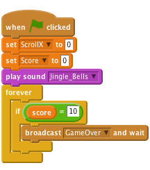

Introduction
In this project we’ll create a game with scrolling backgrounds, scoring and a festive game over screen.
A disaster in a toy factory has sent presents flying into the sky, help Rudolph to save Christmas by catching the presents!
Step 1: Make Rudolph fly
Activity Checklist
- Start a new Scratch project. Delete the cat by right-clicking it and selecting Delete
- Replace the background with SkyBackground.png.
- Add the Rudolph sprite to the project (use the resources/Rudolph.png file)
Make Rudolph follow the mouse by using the following script:
![when FLAG clicked
go to front
forever
go to [mouse-pointer v]](b2527a230cd84ab9b352f988e8ddf33859c6e5e1.png)
Test Your Project
Click the green flag and move the mouse, does Rudolph follow the mouse?
Save your project
- To make the game more interesting we will add some moving snowy hills to make it look like Rudolph is flying. Add the Snow sprite to the project (use the SnowHills.png file).
- Rename the sprite to Snow1.
- Create a new variable by clicking the Data tab and then make a variable. Call it
ScrollXand make it for all sprites, then uncheck the box next to it to remove it from the stage. This will be used to control how the hills move. Add the following script to make the hills move:
![when FLAG clicked
set y to (0)
forever
set x to (ScrollX)
change [ScrollX v] by (-1)
if <(ScrollX) < (-480)> then
set [ScrollX v] to [0]](9053abc4edfc1b98a4bbbc783226e8b22f470d43.png)
Test Your Project
Click the green flag, do the hills move? What happens as the hills move to the side of the screen?
Save your project
- Let’s fix the issue with the snowy hills flickering when they reach the right of the screen. Add more hills to the stage use the new sprite from file button to add the Snow sprite to the project again (use the SnowHills.png file).
- Rename the sprite to Snow2.
Add the following script to the Snow2 sprite to allow the 2nd set of hills to follow closely behind the first:
![when FLAG clicked
set y to (0)
forever
set x to <(ScrollX) + [479]>](467637c7f3887453a5e7c5b924207efbed7ae781.png)
Test Your Project
Click the green flag, do the hills move? Has the issue with the flickering trees been fixed?
Save your project
Step 2: Falling Presents
Activity Checklist
- We now need to add in the presents for Rudolph to collect. Add the Present sprite to the project (use the Present.png file).
- Create a new variable by clicking the
Datatab and then make a variable. Call itFinishand make it for this sprite only, then uncheck the box next to it to remove it from the stage. This will be used to control when the present should be removed from the game. - Create another variable and call it
Speedand make it for this sprite only, then uncheck the box next to it to remove it from the stage. This will be used to control the speed that the present falls down the screen. - Add the following script to the Present sprite to allow it to fall from the sky. Note that we will use
pick randomto make the present appear in a different place each time. By using the
touching [ Rudolph ]block we can make the present disappear when touched, we can use this later to keep a score.![when FLAG clicked
forever
set [Finish v] to [0]
go to x: <pick random (-230) to (230)> y: <pick random (50) to (170)>
set [Speed v] to [-1]
repeat until <(Finish) = [1]>
change y by (Speed)
if <([y position v] of [Present v]) < [-160]>
set (Finish) to [1]
end
if <touching [Rudolph v]?>
set (Finish) to [1]](e6ae886e335138880fb6170885938b8c45ed8197.png)
Test Your Project
Click the green flag, do the presents fall from the sky? Do they disappear when Rudolph touches them or they hit the ground?
Save your project
- Let’s make the game more interesting by changing the colour of the presents each time they fall. Do this by using the
change colourblock. Change the speed of each present by replacing
set Speed to -1with thepick randomblock, try different values such as -10 to -1. Your script should now look like this.![when FLAG clicked
forever
set [Finish v] to [0]
go to x: <pick random (-230) to (230)> y: <pick random (50) to (170)
change [color v] effect by <pick random (1) to (-160)>
set [Speed v] to <pick random (-10) to (-1)
repeat until <(Finish) = [1]>
change y by (Speed)
if <([y position v] of [Present v]) < [-160]> then
set (Finish) to [1]
end
if <touching [Rudolph v]?> then
set (Finish) to [1]](af2955d47d5e5d5274a00c74876f76a81bb6e6d7.png)
Test Your Project
Click the green flag, do the presents fall at different speeds and colours?
Save your project
Step 3: Scoring and Sound Effects
Activity Checklist
- Let’s change our script to keep track of a score within the game. We can then use this later to work out when the game over message should appear.
- Create a new variable. Call it
Scoreand make it for all sprites. Leave this variable ticked so it appears on the screen. Change the script behind the Present sprite to look like this. Note we have both added sound effects with the
play drumcommand and alsochange [ score ] by 1when Rudolph touches the present.![when FLAG clicked
forever
set [Finish v] to [0]
go to x: <pick random (-230) to (230)> y: <pick random (50) to (170)
change [color v] effect by <pick random (1) to (-160)>
set [Speed v] to <pick random (-10) to (-1)
repeat until <(Finish) = [1]>
change y by (Speed)
if <([y position v] of [Present v]) < [-160]> then
play drum [57 v] for (+2) beats
set (Finish) to [1]
end
if <touching [Rudolph v]?> then
play drum [39 v] for (+2) beats
set (Finish) to [1]
change [Score v] by [1]](52d9ac567e7eeb0fc69b0760409f6d15faf4a7c7.png)
Let’s add some music to the game:
Import the sound file Jingle_Bells.mp3 to the Stage.
![when FLAG clicked
set [ScrollX v] to [0]
set [Score v] to [0]
play sound [Jingle_Bells v]](59a8c219b6ff3494b705cb76e1a3dcc290e51570.png)
Add the following script to the Stage, this will
set score to 0when the game is started. It will also play Jingle Bells while the game is being played.
Note, if at first the music sounds ‘choppy’ save your project, close Scratch and then open your project again.
Test Your Project
Click the green flag, does the score change when Rudolph touches a present?
Save your project
Step 4: Game over
- Let’s change our script to keep track of a score within the game. We can then use this later to work out when the game over message should appear.
Change the script on the Stage so when the
Scorereaches 10 we willbroadcasta GameOver message.
- We now need to add in our GameOver message. Add the GameOver sprite to the project (use the GameOver.png file).
Add the following script to the GameOver sprite. This will
hidethe picture when the game starts andshowit when the GameOver message is received.![when FLAG clicked
hide
when I receive [GameOver v]
go to front
show
stop [all v]](490badab10545bd59b1bb17fa30e4723a73d4ad7.png)
Test Your Project
Click the green flag, does the score change when Rudolph touches a present?
Save your project
Challenge: Make the game harder
- Can you make the presents wobble on their way down the screen?
- Can you add more than one present to the game at the same time?
- Change the game over message to appear after 20 presents are collected.
- Can you reduce the score by 1 when a present hits the ground?
Save your project
Well done, you’ve finished! Now you can enjoy your game!
Don’t forget you can share your game with all your friends and family by clicking on Share on the menu bar! Have a very Merry Christmas!